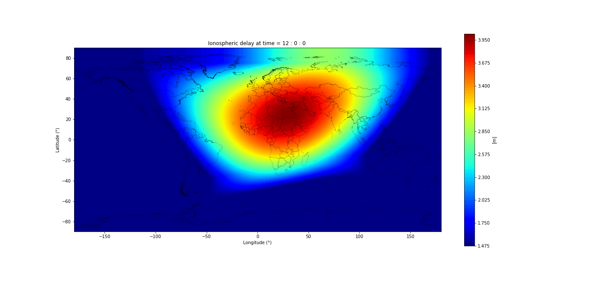
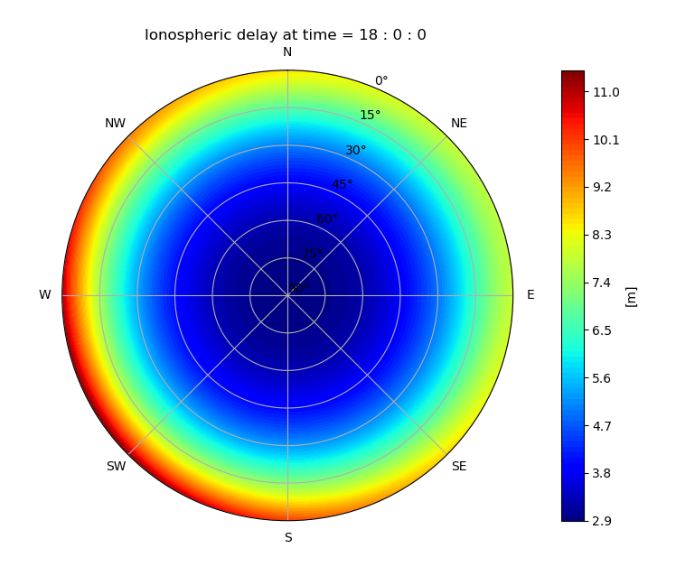

IONOSPHERIC CORRECTION
GNSS Point positioning involves measurement of the signals emitted by a satellite for the determination of the position of a receiver on the surface of the Earth. The signal propagation through the atmosphere is delayed by the presence of free electrons in the ionosphere (about 100 and 1000 km altitude) and the water vapour content of the troposphere. These delays affect the precision in the estimated position of a receiver. However, for a double frequency receiver, the combination of both L1 and L2 frequencies of the signals resolves the effects of the ionosphere.
Global Map
The Figure below shows a sample output map for a global map of ionospheric effects with regions of higher ionospheric error at the time shaded red and regions of lower ionospheric effects shaded blue.

Local Map
The Figure below shows a sample output local map of ionospheric effect for varying elevation and azimuth. From the graph, it is clearer that the ionospheric error is higher for lower elevation of the station with respect to the satellite vehicle.
